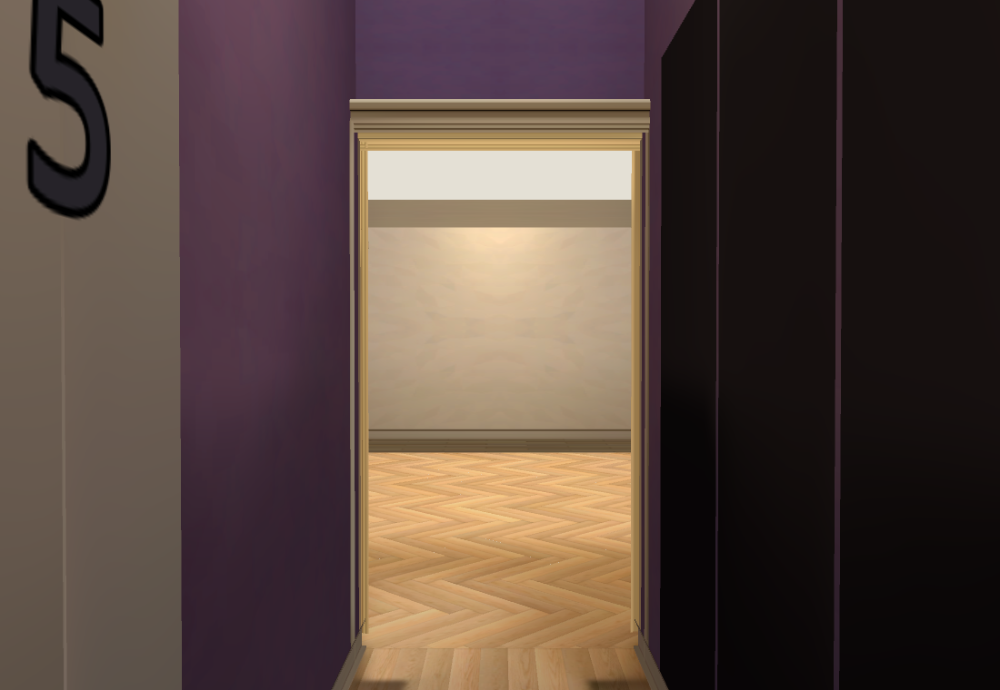
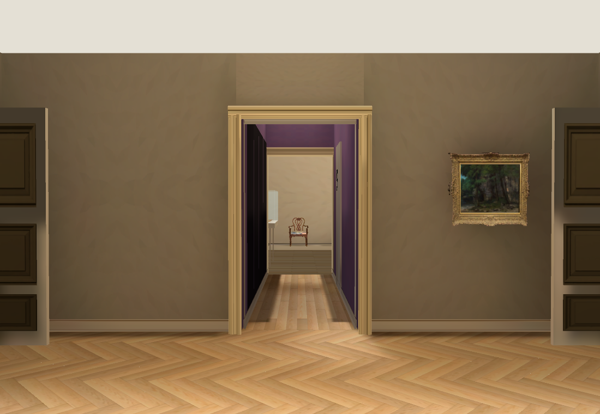
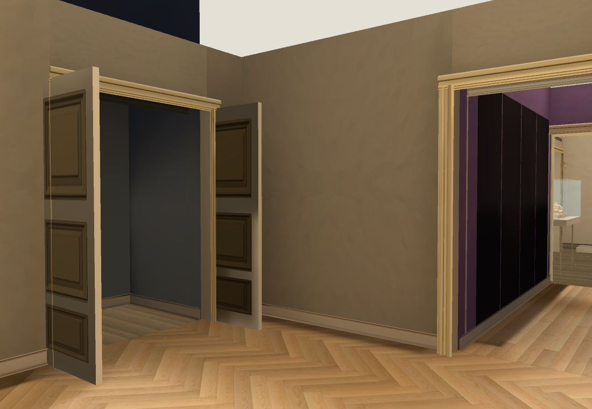
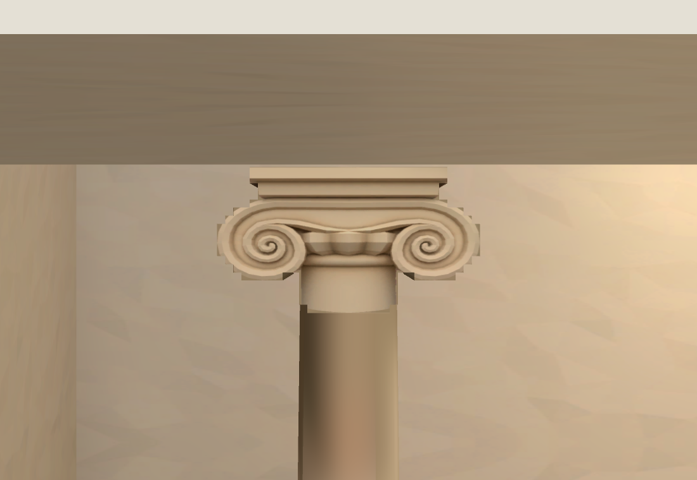
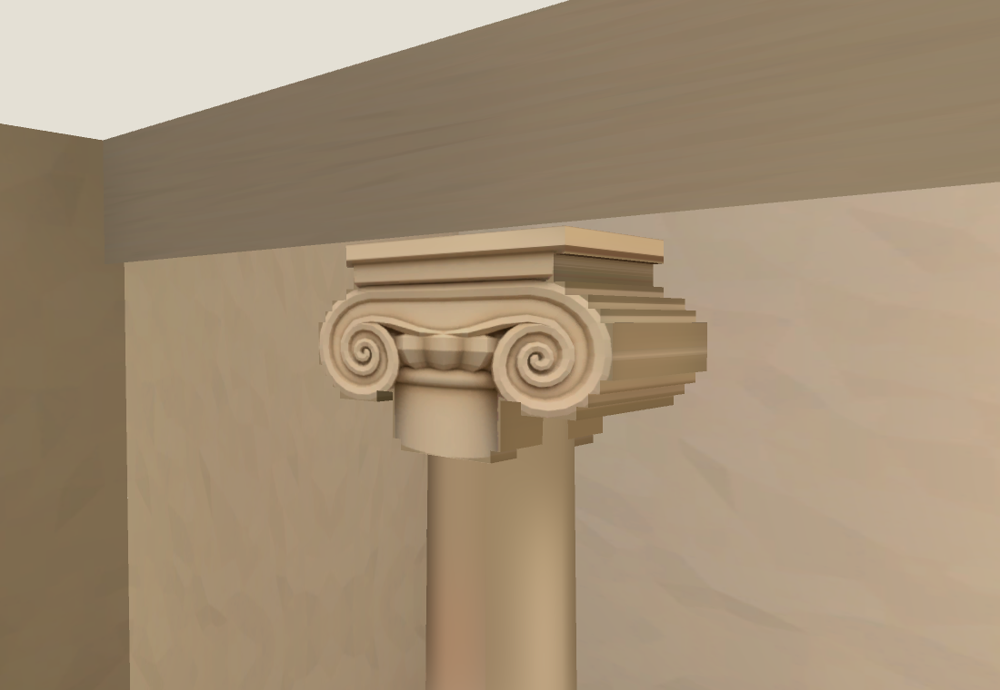
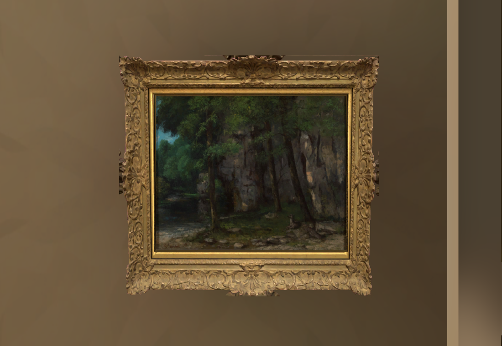
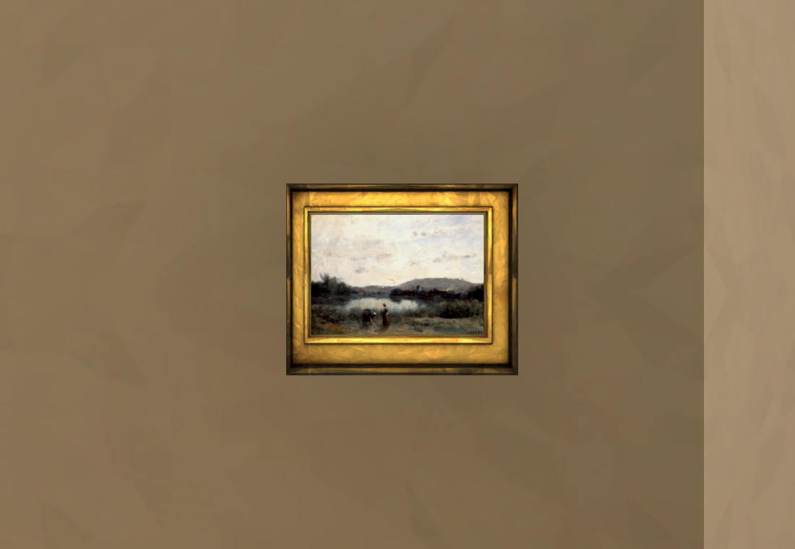
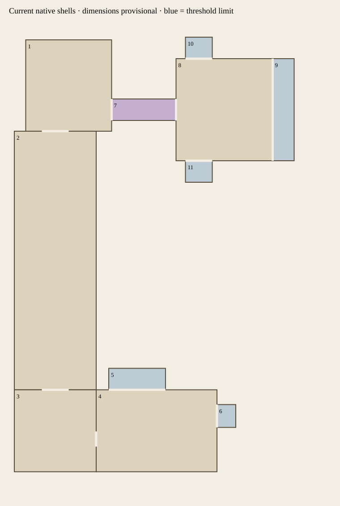
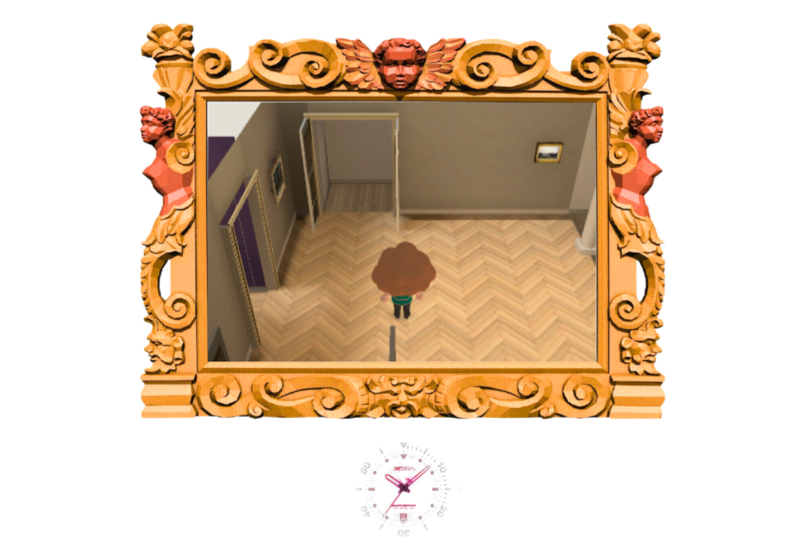
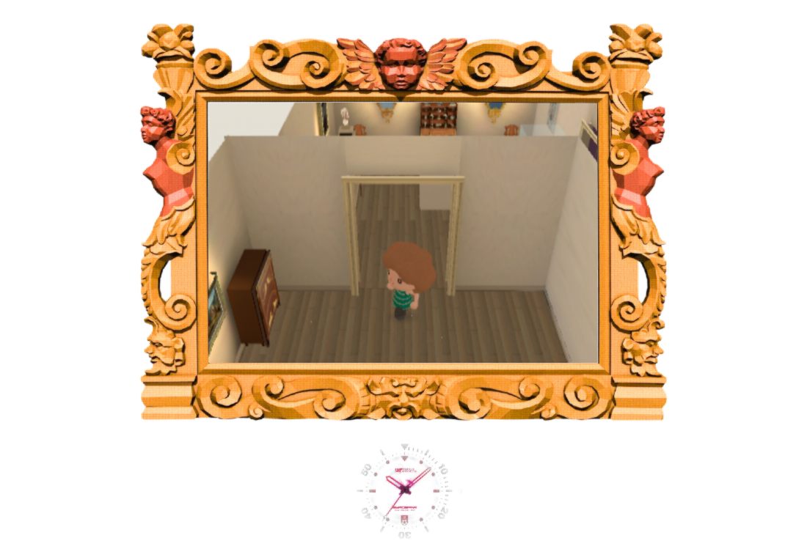

Collection · grey-gallery connection v34
Open the walkable demo · WASD · Space reset · 1 Rockefeller · 2 European gallery · 3 grey gallery. Previous corrections and all ten video surveys.
The purple connector now reaches the grey French gallery. The Ionic opening faces it across the room; the piano and Grand Gallery doors are on perpendicular adjoining walls. Three-paneled open door leaves, two museum paintings and twin-scroll Muse Ionic capitals are installed. All room dimensions, camera fits and object offsets remain provisional. Full Grand Gallery/stair rooms and most grey-gallery contents remain unfinished; the three blue threshold limits are closed study ends.
 Reciprocal source wide views: straight purple connector into grey room, Ionic entrance ahead.
Reciprocal source wide views: straight purple connector into grey room, Ionic entrance ahead.
Current authored connector and grey room. Muse capitals now installed; entablature and source sculpture still missing; doorway metric fit unaccepted.
Reverse view toward Rockefeller: black panels face purple elevator wall.
Perpendicular Grand Gallery entrance beside purple connector. Full blue Main Hall still separate from this threshold. Native video context at6380:34.25s: smooth shaft, twin-scroll capital and dentil beam above.
Native video context at6380:34.25s: smooth shaft, twin-scroll capital and dentil beam above. New original Muse capital; $0.01, preserved intact. Native mesh supplies provisional closed depth.
New original Muse capital; $0.01, preserved intact. Native mesh supplies provisional closed depth.
New Muse twin-scroll capital; closed 1928-triangle silhouette, width/height/depth provisional.
Oblique source-guided profile. Constant-depth extrusion repeats frontal colour; carved volute relief and reverse remain unaccepted.Two distinct Muse frames, official museum paintings
 Source Courbet43.571; frame with projecting carved foliage.
Source Courbet43.571; frame with projecting carved foliage.
Muse frame around official painting. Bands fitted using provisional planar corners; hidden depth and ornament remain unaccepted. Source Corot24.089; simple gold/black rectangular frame.
Source Corot24.089; simple gold/black rectangular frame.
Separate Muse frame around the official painting. Exact catalogue support/frame distinction and nonplanar dimensions remain unverified. Original Courbet Muse output; $0.01, retained intact.
Original Courbet Muse output; $0.01, retained intact. Original Corot Muse output; $0.01, retained intact.
Original Corot Muse output; $0.01, retained intact. Source white door leaf: unequal panels, open into Grand Gallery.
Source white door leaf: unequal panels, open into Grand Gallery. Original Muse output; $0.01. Generated extra jamb excluded; three panels assembled around native rails/stiles. Exact heights/hardware and reverse remain unfinished.
Original Muse output; $0.01. Generated extra jamb excluded; three panels assembled around native rails/stiles. Exact heights/hardware and reverse remain unfinished.Also matched Villeneuve Roman Aqueduct1998.35 at6380:86.25s, Daubigny Landscape73.120 at6380:25.25s and Pannini The Colosseum56.094 to source6380:190–195 and official RISD image; its new frame and placement are not yet installed. Survey inventory and nine new RISD matches · Provisional frame corner fits · Remaining acceptance.
Unresolved spacing check: current Hall entrance centres differ4.60m sideways and17.05m along the corridor. The saved26.3m Hall has aligned end doors; the present guessed room dimensions do not fit it yet.
Current native map

- Rockefeller
- adjacent gallery
- light Renaissance room
- dark medieval room
- Main Hall portal threshold study limit
- stairs landing threshold study limit
- purple elevator-5 connector
- grey French gallery
- Ionic marble-stair threshold study limit
- piano-stair threshold study limit
- Grand Gallery grey-entry threshold study limit
Checks
Native RTX 54 / 54 collision/camera checks; p95 30.30ms. Chrome RTX ANGLE 54 engine checks plus actual keyboard round trip; p95 28.70ms, no runtime/JS errors. LightmapGI:545 surfaces; latest bake timing in checkpoint; walls still warmer than source grey. Native wide renders and browser images inspected. Black panel faces now follow their owning wall cutaway. Repository/diff checks passed. Shell44/50: four previously recorded layout/pixel failures plus two timing failures; frozen Shell unchanged. Muse new spend$0.04 sincev26, cumulative map$0.69 actual/$0.70 conservative. Heartbeat disabled, 3D Viewer untouched. Reconstruction unfinished.

Actual native camera in new grey room.
Chrome keyboard/camera round trip through existing European doorway.Next: source-fit the full Grand Gallery loop; add missing grey-gallery sculpture, seven remaining paintings and Ionic entablature/relief using verified records and further Muse passes. Do not merge the two stair halls or invent unfilmed corridors.